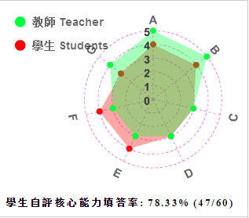
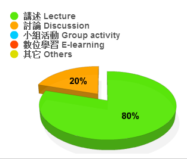

課程

學年/學期 Academic Year/Semester
103 學年 第 1 學期
課程名稱 Course Name
class_ID:703049-001
(中 Ch.)計算機程式設計
(英 Eng.)Computer Programming (I)
授課教師 Instructor
蔡銘峰
修別 Type of Credit
必修
學分數 No. of Credit
3.0
備註 Note
另有實習課703957-00-1
課程目標 Course objectives
本課程是以ｃ語言為主介紹程式設計的基礎知識，目的在培養學生對計算機程式的組成、結構、與設計之基本瞭解。
課程大綱 Course Description
- 使用電腦搜尋資料、編輯文件的基礎技能
- 使用文字編輯器及程式編譯器編譯程式的能力
- 使用整合基工具進行編譯及偵錯的能力
- 瞭解ｃ語言的基本組成與資料型態
- 結構化程式設計
- 程式流程控制
- ｃ函式
- 陣列與指標
- 結構與列舉
- 輸出與輸入
- 基本資料結構
- 其他進階主題
上課進度 Class Schedule
- Course Introduction; World of Programming
- Unix Environment; Utilities of Development
- Introduction to the C language
- Structured Program Development
- Program Control Flow
- Function
- Array
- Pointer (I)
- Pointer (II)
- Midterm
- Strings
- Structure, Union, and enum
- Formatted I/O
- File Processing
- Basic Data Structure
- Other C Topics
- OOP and Review
- Final Exam
課程要求/評分標準 Course requirements/Grading standards
- Midterm: 30%
- Final Exam: 35%
- Labs & Assignments: 35%
- Bonus (participation):< 5%
參考書目 Textbook & references
（為維護智慧財產權，請務必使用正版書籍）
Textbook: C: How to Program (6th Edition), Paul Deitel, Harvey M. Deitel. （全華圖書代理）
References: The C Programming Language (2nd Edition), K&R. （全華圖書代理）
本課程附件 Course attachments
N/A
核心能力分析圖
Core Competence analysis chart

授課方式比例圖
Teaching approach pie chart

能力項目說明：
- 培養邏輯推理、獨立思考與創新能力
- 理解自然科學與數位科技
- 培養團隊合作的能力
- 具備有效的溝通表達能力
- 養成終身學習與自我提升能力
- 瞭解資訊科技發展趨勢與具備國際視野
- 具有專業及道德責任的認知